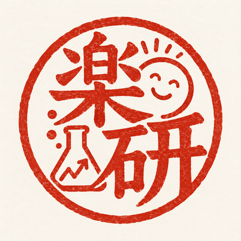

縁の鑑定書
あなたと「あの人」の関係に、
勝手に名前をつけます。
＼ 世界一どうでもいい、でも捨てられない鑑定書です ／
友達、夫婦、親子、仕事仲間。
なぜか出会って、なぜか続いているその縁を、
AIが少し大げさに、でも妙に納得する言葉にします。
鑑定例
たまたま隣の席になった、あの人の場合
鑑定
号外
縁の鑑定書
— 宇宙が認めた、あなたの縁 —
獲得した称号宇宙が計算して、隣の席に配置した人
発動スキル久しぶりに会っても、昨日の続きから話せる
この縁に宇宙が費やしたエネルギー
540兆キロカロリー
「この縁は、あなたの毎日に“笑う予定”を追加するために、
宇宙が配置したものです。」
── 鑑定文より
どんな関係でも、鑑定できます
親友 ／ 恋人 ／ きょうだい ／ 昔の同級生 ／ なぜか縁が切れないあの人
先着100名限定・無料（お一人さま1回）
質問に答えてみる先着100名限定
「縁の鑑定書」を無料で発行します
無料鑑定は、お一人さま1回です
最初の100名を、勝手に「第1期研究員」と呼んでいます。特別な活動はありません。
鑑定後、よろしければ Instagram（@tanoshinda_lab）のコメントで感想をお聞かせください。SNSへの投稿は必須ではありません。
うまく書かなくても大丈夫です。
思い出せる範囲で、短く教えてください。
AIが、その関係らしい言葉に整えます。
3つの質問だけ所要時間 約3分本名不要一言ずつでもOK
本名・住所・電話番号・学校名・勤務先名など、あなたやお相手を特定できる情報は入力しないでください。
「夫」「親友」「職場の先輩」など、関係が分かる表現でOKです。
鑑定書に書かれること
- あなたとあの人の「縁の称号」
- 2人だけの「発動スキル」
- この縁に宇宙が費やしたエネルギー
- もう少し詳しい鑑定文（全文の証書）
- シェア用の号外画像（保存できます）
入力内容は鑑定結果を生成するためAIサービス（Google の Vertex AI）へ送信され、システムの処理履歴に一定期間残る場合があります。
入力内容を、鑑定以外の目的で公開・販売・再利用することはありません。
回答後、その場で鑑定結果が表示されます（30秒ほどかかることがあります）。
人との関係は、簡単な言葉では説明できません。
だからAIに、少し大げさな名前をつけてもらうことにしました。
笑ったあとに、その人が少し大切に見えたら、
この研究は成功です。
── AIと世界をおもしろくする公開実験
人生楽しんだもん価値研究所
鑑定結果
鑑定
人生楽しんだもん価値研究所
縁の鑑定書
鑑定
号外
縁の鑑定書
— 宇宙が認めた、あなたの縁 —
号外＝称号とスキルの見せ場だけの1枚。証書＝鑑定文の全文入り。
ボタンを押すと画像が表示されます。長押しで写真に保存できます。